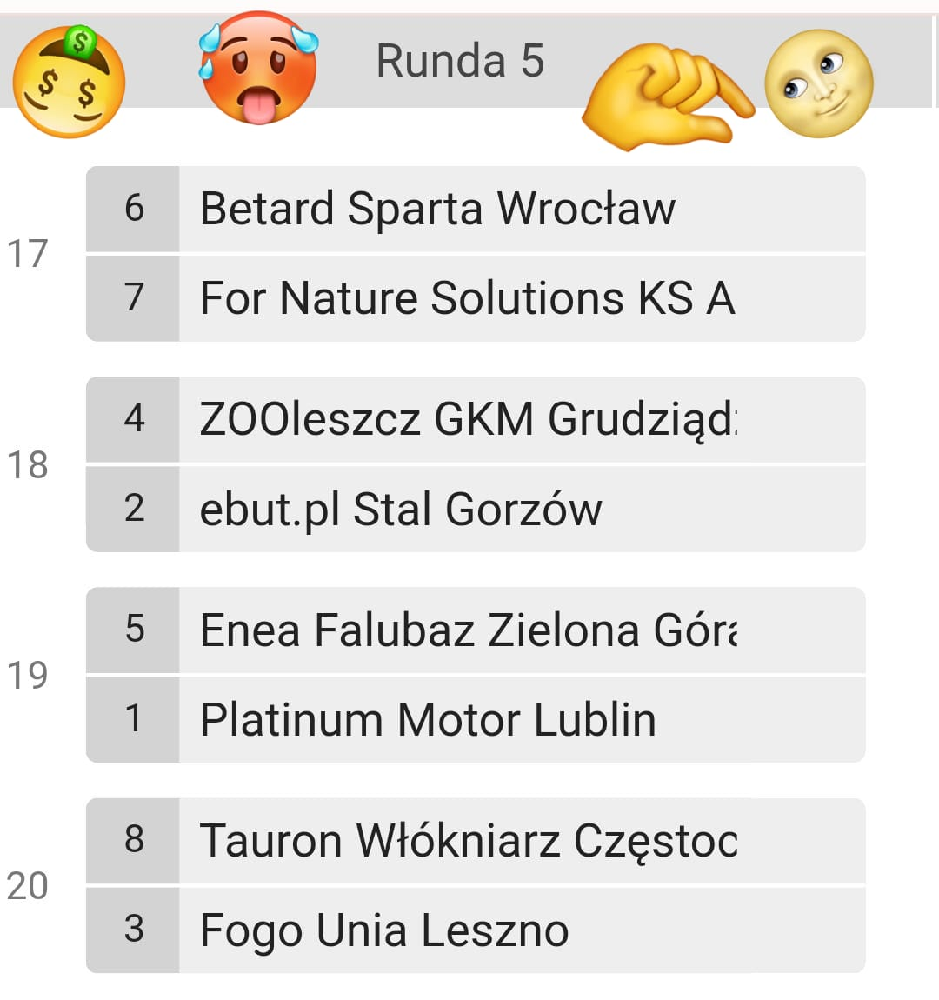

Newsy ze świata SC2023!!!
5 Kolejka symulowanej PGE Ekstraligi

Właśnie zakończyła się 5 kolejka symulowanej PGE Ekstraligi i o to wyniki
Wrocław rozdudnił Toruń wynikiem 57:33
Gorzów pokonał Grudziądz wynikiem 49:41
Lublin rozwalił Zieloną Górę 52:38
Częstochowa pokonała Leszno 54:36
Podsumowując w tej kolejce nie stało się nic nadzwyczajnego
I jak wam źle albo dobrze w życiu to kup Red Bull Energy to będzie lepiej (materiał sponsorowany)
Grupa kibiców Stali i Falubazu zatrzymana przez Policje
W raz z nadchodzącymi derbami Stali Gorzów z Falubaz Zieloną Górą grupy stowarzyszenia kibiców stają się bardziej aktywne
Dzisiaj doszło do ustawki kibiców obu drużyn pojawił się ciężki sprzęt a nawet broń palna Policja zjawiła się tak szybko jak tylko mogła zatrzymując wszystkich tam obecnych
Trzech męszczyzn zostało wysłane do szpitala ciężko ranni oraz dwóch niestety martwych
Czy KOL coś z tym zrobi? Ostatnio kibice stają się bardziej agresywnii co prowadzi do wielu śmierci jeżeli nie chcecie umrzeć pijcie Red Bull Energy (materiał sponsorowany)